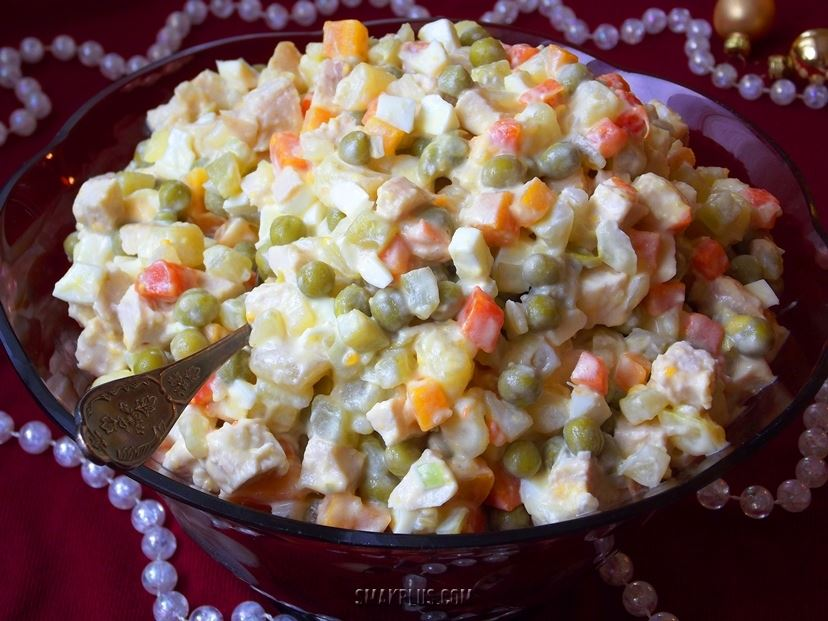
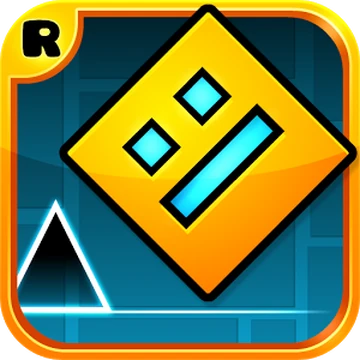
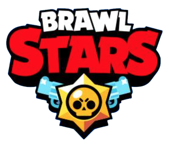
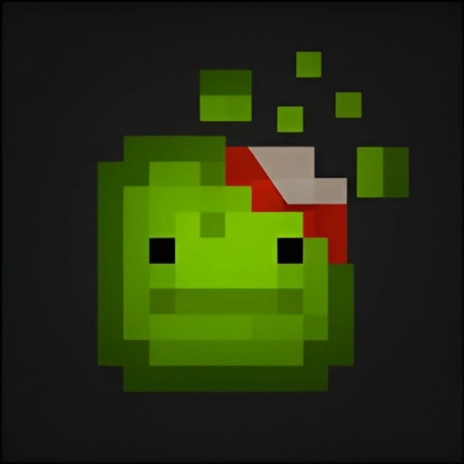
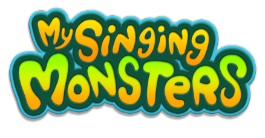

Мій улюблений салат це Олів'є
ІНГРИДІЄНТИ
Варена ковбаса
Картопля
Морква
Курячі яйця
Солоні або мариновані огірки
Консервований зелений горошок
Ріпчаста цибуля
Майонез
Сіль та чорний мелений перець
Опис приготування
- Підготовка продуктів: Ретельно вимийте картоплю та моркву. Відваріть їх «в мундирах» до м'якості (приблизно 20–30 хвилин). Окремо зварітьця яйця (8–10 хвилин). Охолодіть всі інгредієнти в холодній воді та очистіть.
- Нарізка: Наріжте відварену картоплю, моркву, яйця, ковбасу та огірки дрібними кубиками. Намагайтеся робити їх однакового розміру — це впливає на текстуру та естетичність страви.
- Змішування: Складіть всі подрібнені складники у велику салатницю. Додайте консервований зелений горошок, попередньо зливши з нього рідину.
- Заправка: Посоліть та поперчіть салат за смаком. Заправте майонезом та обережно перемішайте, щоб інгредієнти не перетворилися на пюре.
- Охолодження: Поставте салат у холодильник на 1-2 години, щоб він настоявся та охолодився. Перед подачею можна прикрасити свіжою зеленню.
Це все було придумано ШІ😶🌫️

вот і саме олів'є
ігри в які я граю



